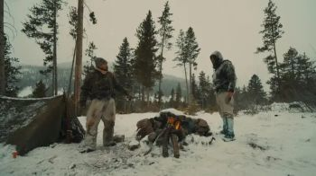

Постапокалиптика — жанр научной фантастики и фильмов-катастроф, в котором действие развивается в мире, пережившем глобальную катастрофу. Постапокалиптическим называют также творческий стиль, несущий настроение пустынности, одиночества и ужаса в образах постаревшей и покинутой техники или зданий.
Получил широкую популярность после Второй мировой войны в связи с опасениями по поводу использования ядерного оружия, однако подобные произведения начали писать ещё в 19 веке, например «Последний человек» М. Шелли.
Основная идея:
Основным характеристическим признаком постапокалиптики является развитие сюжета в мире (или ограниченной его части) с особенной историей. В прошлом этого мира цивилизация достигла высокого уровня социального и технического развития, но затем мир пережил некую глобальную катастрофу, в результате которой цивилизация и большинство созданных ею богатств были уничтожены. В качестве катастрофы, уничтожившей мир, чаще всего фигурируют: Третья мировая война с применением оружия массового поражения (ядерного, химического или биологического), вторжение инопланетян, восстание машин под предводительством искусственного разума (роботов), пандемия, падение астероида, массовое появление доисторических чудовищ, климатическая или иные катастрофы.
Типичный постапокалиптический сюжет начинает развиваться, как правило, спустя значительное время после катастрофы, когда её «поражающие факторы» сами по себе уже перестали действовать. В том или ином виде до читателя (зрителя) обычно доводится в сжатом виде история общества с момента катастрофы: непосредственно за ней следует период дикости, затем выжившие концентрируются вокруг сохранившихся источников жизнеобеспечения, стихийно образуются те или иные новые социальные структуры. К моменту начала сюжета этот процесс уже обычно завершён, на пригодной для жизни территории создался определённый конгломерат сообществ, сложилось более или менее устойчивое равновесие сил.
Типичные детали:
Обычными для постапокалиптики являются:
• Сельские общины или феодальные хозяйства, производящие продукты питания.
• Городские поселения — центры торговли, ремёсел, обычно достаточно криминогенные, но живущие по определённым законам и имеющие силы поддержания порядка.
• Банды — чисто криминальные сообщества под предводительством сильного лидера, базирующиеся на сохранившихся технологических объектах, предоставляющих минимум, необходимый для выживания (развалины заводов, выброшенные на берег или находящиеся на плаву гигантские корабли и т. п.), и живущие за счёт грабежа на торговых путях, налётов на оседлые поселения и нелегальной торговли.
• Дикие племена, обитающие обычно в пустынях, горах, другой труднодоступной местности и состоящие из одичавших либо мутировавших людей.
• Более или менее изолированные высокотехнологичные компактные сообщества, образовавшиеся на базе крупных военных баз, научных городков, орбитальных станций или созданных специально в преддверии катастрофы убежищ. Обычно описываются как относительно цивилизованные (в отличие от большинства других общественных образований, они не восстанавливали общественную организацию, а сохранили и модифицировали то, что было до катастрофы), но при этом тоталитарные, управляемые радикальными военными или учёными. В их руках находятся наиболее опасные технологии, сохранённые с докатастрофических времён. Как правило, такие сообщества по возможности поддерживают изоляцию от окружающего мира. Иногда они достаточно сильны, чтобы не только противостоять возможной агрессии, но и проводить в отношении ближайших соседей политику с позиции силы.
• Крупные города или даже более значительные территориальные образования, в силу тех или иных причин не затронутые или мало затронутые катастрофой и сохранившие «старый» уклад жизни, постепенно изменяющийся под воздействием внешних факторов.
В описании места действия, как правило, присутствуют:
• Обширные пустыни на месте ранее заселённых территорий.
• Заброшенные, частично разрушенные города, предприятия, военные объекты.
• Территории, ранее находившиеся на суше, но в результате катастрофы затопленные морем. Здания и техногенные объекты на морском дне.
• Мутировавшие люди, животные, растения, целые леса-мутанты.
• Многочисленные артефакты погибшей цивилизации, частью опасные, частью полезные, но обычно просто служащие фоном для повествования.
2067 is a 2020 Australian science fiction mystery thriller film directed by Seth Larney and starring Kodi Smit-McPhee and Ryan Kwanten.
2149: The Aftermath (also known as ESC, Darwin, and Confinement) is a Canadian science fiction film directed by Benjamin Duffield and written by Robert Higden. The film stars Molly Parker, Nick Krause, Juliette Gosselin, Cassidy Marlene Jaggard, Jordyn Negri, and Daniel DiVenere.
Principal photography on the film commenced June 2014 in Greater Sudbury, Ontario, Canada, and wrapped-up July 2014. Suki Films is producing the film with Nortario Films, based in Greater Sudbury. The film was financed by Telefilm Canada, the Northern Ontario Heritage Fund Corporation, the Ontario Media Development Corporation, and the Harold Greenberg Fund. It is scheduled for release summer 2016.
AKA:
Movie: Allegiance of Powers
Storyline: Groups of super powered people begin a war that will bring the city they live in crumbling down. Allegiances of super powered people fight for control of a young girl, who holds the ultimate power to control anything and everyone in the city. They will begin a war that in the end could bring the entire city crumbling down.
Genres: Sci-Fi
Actor: Robert Cavazos, Ariah Davis, Jason Dilworth
Director: Michael Crum
Country: USA
Duration: 83 min
Release: 1 January 2016 (USA)
«Армия мертвецов» (англ. Army of the Dead) — художественный фильм режиссёра Зака Снайдера в жанре боевика ужасов и фильма-ограбления по сценарию Шэя Хэттена, Джоби Гарольда и самого́ Снайдера. Сценарий фильма основан на сюжете истории, сочинённой Заком Снайдером. Главные роли в фильме исполняют Дейв Батиста, Элла Пернелл, Ана де ла Регера, Тео Росси, Крис Делиа и Хьюма Кьюреши. Фильм выпущен стриминговым сервисом Netflix.
Movie: Apocalypse Rising
Storyline: They came from a doomed world to save us from the same fate.
Genres: Adventure, Comedy, Fantasy
Actor: Hunter Alexes Parker, Shane Samples, Justin Lebrun
Director: Richard Lowry
Release: 12 June 2018 (USA)
«Судный день» (англ. Doomsday) — фантастический постапокалиптический боевик с элементами триллера 2008 года, снятый режиссёром Нилом Маршаллом. Согласно фильму, весной 2008 года Шотландию охватила пандемия таинственного смертоносного и неизлечимого вируса, известного как «Жнец» (англ. Reaper) его главные симптомы: язвы, рвота и высокая температура, после чего весь этот регион страны был изолирован, а его обречённые жители брошены на произвол судьбы. Тем не менее, в 2035 году, когда происходит действие фильма, «Жнец» снова появился — на сей раз в обильно заселённом Лондоне. Правительство Великобритании посылает отряд спецназа под командованием майора Иден Синклер (Рона Митра) в якобы вымершую Шотландию, где британский разведывательный спутник засёк признаки присутствия людей, свидетельствующие о том, что внутри карантинной зоны была найдена вакцина против вируса. Внутри карантинной зоны майор Синклер и её спутники сталкиваются с двумя агрессивными группами выживших — мародёрами-каннибалами, напоминающими одновременно панков и племена дикарей, и консерваторными мракобесами, напоминающими средневековых рыцарей.
Концепция фильма изначально была основана на идее режиссёра и сценариста фильма Нила Маршалла столкнуть современных солдат со средневековыми рыцарями. Фильм содержит огромную массу киноцитат и отсылок к классическим фантастическим фильмам, в частности, «Побег из Нью-Йорка», «Безумный Макс» и другим.
Маршалл собрал для этого фильма втрое больший бюджет, чем вместе взятые бюджеты его предыдущих фильмов — «Псы-воины» (2002) и «Спуск» (2005). Съёмки велись в Шотландии (в том числе в известном замке Блэкнесс) и Южной Африке, которая и сыграла роль постапокалиптической Шотландии. В США и Канаде премьера фильма состоялась 14 марта 2008 года, в Великобритании и России — 9 мая и 27 марта того же года соответственно. Фильм получил смешанные, но в основном отрицательные оценки критики и собрал в прокате весьма умеренную сумму, едва окупив затраты на собственное производство.
Domain is a 2016 film directed by Nathaniel Atcheson. It premiered at the Austin, Texas, Other Worlds sci-fi film festival. Its plot has been noted for its similarities to the COVID-19 pandemic.
Movie: Fallout: Red Star
Storyline: Set in the Fallout game universe, this fan film follows the ranger on a mission to find a person of interest.
Genres: Action, Drama, Sci-Fi
Actor: Cameron Diskin, Catherine Carlen, Toni Wynne
Director: Vincent Talenti
Duration: 29 min
Release: 28 June 2013 (USA)
«Финч» (англ. Finch) — американская научно-фантастическая драма Мигеля Сапочника, сценарий которой написали Крэйг Лак и Айвор Пауэлл. Главную роль в фильме исполняет Том Хэнкс. Фильм вышел 5 ноября 2021 года на потоковом сервисе Apple TV+.
Movie: Last and First Men
Storyline: Two billion years ahead of us, a future race of humans finds itself on the verge of extinction. Almost all that is left in the world are lone and surreal monuments, beaming their message into the wilderness.
Genres: Fantasy, Mystery, Sci-Fi
Actor: Tilda Swinton
Director: Jóhann Jóhannsson
Country: Iceland
Duration: 70 min
Release: 21 September 2020 (UK)
Movie: The Last Starship
Storyline: In a post-apocalyptic world, war is raging once more. The last of humankind are hunted by a giant monster, attacked by an army of zombies, and ancient machines of war. The only way out is to fight.
Genres: Action, Adventure, Drama
Actor: Emilio De Marchi, Cecile Decker, Christiane Hilbert
Director: Sven Knüppel
Country: UK
Duration: 108 min
Release: 11 July 2017 (USA)
«Хроники хищных городов» (англ. Mortal Engines, с англ. — «Смертельные механизмы (машины)») — новозеландско-американский научно-фантастический приключенческий фильм режиссёра Кристиана Риверса, снятый по мотивам одноимённого романа Филипа Рива. Главные роли исполнили Роберт Шиэн и Гера Хилмарсдоттир. Премьера фильма в кинотеатрах США состоялась 14 декабря 2018 года, а России 6 декабря.

Movie: Permafrost
Storyline: In a collapsed frozen world, factions fight for power. A lone bounty hunter at the center of it all saves a little girl who helps him find redemption from his past.
Genres: Action. Adventure, Drama
Actor: Lenni Uitto, Riley Hardy, Ariel Dawn
Director: Lenni Uitto
Duration: 80 min
Release: January 5, 2024 (United States)
Phase 7 (Spanish: Fase 7) is a 2010 Argentine science fiction black comedy film written and directed by Nicolas Goldbart and starring Daniel Hendler, Yayo Guridi, Jazmín Stuart and Federico Luppi.
Movie: Portals
Storyline: After a series of worldwide blackouts, millions of mysterious door-like cosmic anomalies appear on Earth. While many flee from them, the real terror sets in when others are drawn into these mysterious voids.
Genres: Horror, Sci-Fi
Actor: Neil Hopkins, Ruby O'Donnell, Phet Mahathongdy
Director: Gregg Hale, Liam O'Donnell, Eduardo Sánchez
Duration: 88 min
Release: October 25, 2019 (United States)
«Узники страны призраков» (англ. Prisoners of the Ghostland) — американский неонуарный вестерн-боевик режиссёра Сион Соно по сценарию Аарона Хэндри и Резы Сиксо Сафаи. Главные роли в нём играют Николас Кейдж и София Бутелла. Премьера состоялась в январе 2021 года, в прокат картина вышла 17 сентября 2021 года.
«Тихая Земля» (англ. The Quiet Earth, редко «Тихая планета») — новозеландский кинофильм 1985 года. Экранизация одноимённого произведения Крэйга Харрисона.
«Стальной рассвет» (англ. Steel Dawn) — фантастический фильм 1987 года, главную роль в котором исполнил Патрик Суэйзи.